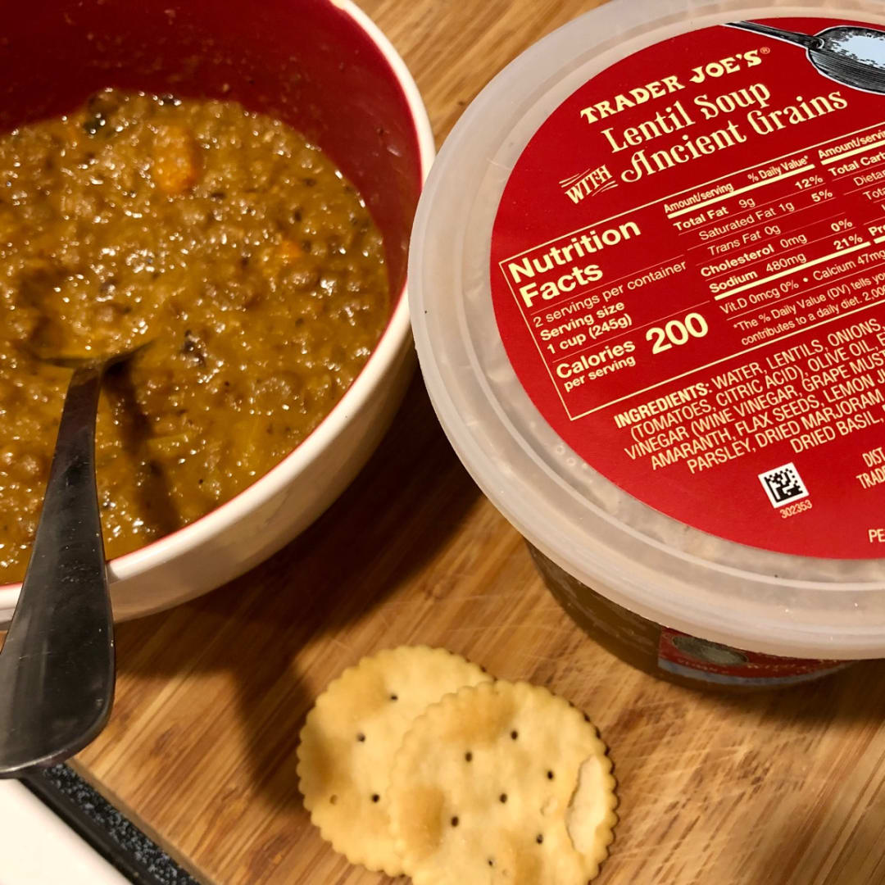
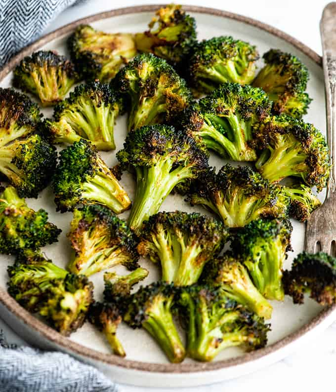

Lentil Soup and Broccoli


Description
This meal hits all the five pillars. Healthy, filling, cheap, convinient, delicious (although Heidi disagrees)
Ingredients
- Trader Joe's Lentil Soup
- 1 pack Broccoli
- A few slices o' bread
- Olive oil
- Salt
- Pepper
- Garlic
Steps
- Mix broccoli with olive oil, salt, pepper, and garlic in large bowl
- Dump broccoli on oven sheet, put in oven @ 400F for roughly 16.3 minutes
- Heat up lentil soup in saucepan
- Oh toss some bread in the oven too
- Serve warm